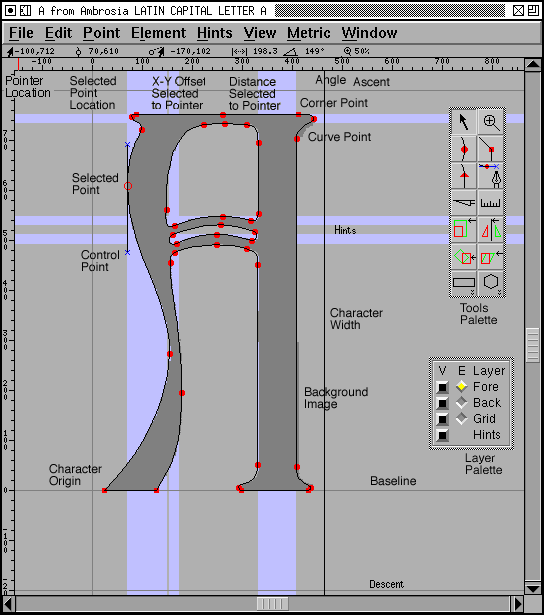
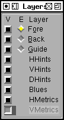
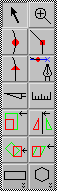

A Kanji character

The outline character view is the window in which most editing happens.
At the top of the window, underneath the menu bar is an information line. The first item is the location of the mouse pointer (in the internal coordinate system of the character). If there is a single selected point then the next item gives its location, and the next three are, respectively, the offsets from the selected point to the current location, the distance from the selected point, and the angle from the horizontal (measured counter-clockwise).
Underneath the information is a ruler showing the current pointer location as a red line. There's a similar ruler on the left side.
Underneath that is the character itself. On the left edge of the screen is a grey line indicating the x=0 line, further right is a black line showing where the character's width is currently set. There are also grey lines showing the ascent, descent and baseline.
Background images and background splines are drawn in grey. Grid lines are also drawn in grey. Hinting regions are drawn in light blue.
The points of the character are of three types, corner points drawn as filled squares, curve points drawn as filled circles and tangent points drawn as filled triangles. If a point is selected then it will be drawn as an outlined square, circle or triangle and its control points are drawn as little blue xs at the end of a black line. (in a curved point the control points will be colinear).
There are also two independent palettes, one allowing you to control which layers are visible, and one a tool palette from which you may pick editing tools.
You select an editing tool by clicking on the appropriate button on the tools palette, or you may depress the right mouse button and select a tool from a popup menu. There are four different tools bindings available to you (this may be a complication with no utility). The left mouse button has a tool bound to it, and this tool will be displayed when the program is idle. If you hold down the control key, another tool is available, by default this is a pointer but if you click on the tools palette with the control key down you can select something else. If you depress the middle mouse button you get a third tool (by default a magnifying glass), and the control key and middle button give you the fourth (a ruler).
If the mouse pointer is close to a point (within a few pixels) when you depress the mouse, then the effective location of the press will be the location of the point.

There are four layers in the outline view, three of which are editable. Each layer has a check box (indicating whether it is visible or not) and a radio button (indicating whether it is editable-- The Hints layer is not editable and has no radio button).
The first is the foreground layer, this contains the splines that actually make up the character that will be placed into the font.
The second is the background layer, this contains background images and splines. These do not go into the font, but may be helpful to you in tracing the outline of your character.
The third layer is a set of grid lines/splines. These are common to all characters in the font. A few lines are provided for you (the x=0 line, the ascent, descent and baseline). Other handy lines might by the x-height of the font, the cap-height, ascent-height, descender-height, ...
The final layer are the hints for this character. Hints may be created with
the Hints->AutoHint command, the presence of hints will sometimes
improve rasterization.

There are 14 different editing tools of which two (rectangle/ellipse and polygon/star) come in two forms.
This tool is used for selecting points, images and referenced characters. It can also move these and scale images and referenced characters.
Only things that are in the layer that is currently editable may be selected or moved or scaled.
A simple click on an unselected point selects it and deselects everything else. A shift click on a point toggles whether that point is selected or not. A double click selects all points on the path containing that point. Clicking on the background will deselect everything. Clicking on the background and dragging out a rectangle will select everything within the rectangle. Clicking on a line or spline will select the two end points of that line or spline. Clicking on the dark part of an image (when in the background layer) will select the image. Clicking on the outline of a referenced character will select that reference (if a reference character happens to have the same outline and bounding box, then holding down the meta key will allow you to move it once it is selected, without the meta key you will resize it).
Once something is selected you may drag it around. If you select something and then drag the mouse then it and everything else selected will be moved. If you drag an open path and one of the end points happens to fall on the end point of another open path, then the two will be merged into one. If you drag a control point then it will be moved.
If you selected a spline, then dragging it will drag the location on the spline where you pressed the mouse.
If you hold the shift key down when you drag then the motion will be constrained to be either horizontal, vertical, or at a 45° angle. (When moving control points the combination of shift and meta (alt) will mean that the control point is constrained to be the same angle from the base point as it was before you started moving it).
If you move the mouse to the bounding box of a selected image or reference character and drag it then you will scale that object.
If you move the mouse to the width line, then dragging it will change the width of the current character. If there are any bitmaps of this character then their widths will also be updated. If there are any other characters which depend on this character (ie. include this character as a reference) and their width was the same as the character's, then their widths will also be updated (so if you change the width of A, then the width of À, Á, Â, Ã, Ä and Å might also be changed).
It is also possible to use the arrow keys to move selected items around. Each arrow will move the selection one em-unit in the obvious direction.
Clicking with the magnifying tool will magnify the view and center it around the point you clicked on. Holding down the Alt (Meta) key and clicking will minify the view, again centered around the point at which you clicked.
These three tools behave similarly, differing only in what kind of point is added to the view.
If a single point is selected, and if that point is at the end of a path then depressing the mouse button will create a new point where the mouse was depressed and draw a spline from the selected point to new point. If this new location happens to be the end of a path then the two paths will be joined (or if it is the end of the current path then the path will be closed).
Otherwise if the mouse is depressed while being on a spline then a point will be added to that spline.
Otherwise a new point is created not on any path at the location of the press.
Once the point has been created then it becomes selected and all others are deselected. You may drag the point around, and if the point is on an open path and you drag it to the end point of another open path then the two paths will be joined.
In many ways this is similar to the tools above, the only differences are that the points created are curved points, they are initially created with the control points on the point and as you drag you drag out the control points rather than moving the point itself around.
This tool is used to cut splines. As you drag it across the view every spline you intersect will be cut-- that is at the location where your drag intersects the spline two new points will be created and the old spline will be split in two connecting to the two new end points. These endpoints are not joined, so the spline is now open (or if it were previously open, it is now cut in two).
This tool tells you the x-y offsets, distance and angle from the point where you depressed the mouse to the mouse's current location.
This tool allows you to scale the selection by eye rather than by a set amount (if there is no selection then everything in the current layer will be scaled). The location of the press will be the origin of the transformation, the further you move the point up and to the right the more it will be scaled in that dimension. If you want the scaling to be uniform or only in one dimension then hold down the shift key.
This tool allows you to flip the selection either horizontally or vertically. Again the point at which you press the mouse is the origin of the transformation.
This tools allows you to rotate the selection freely.
This tool allows you to skew the selection.
By default this produces a rectangle, but if you double click on the button in the tools palette you can make it produce an ellipse or a rectangle with rounded corners.
The rectangle will be drawn between the point where you depressed the mouse on the view and the point where you released it.
By default this draws a regular polygon, but by double clicking on the button in the tools palette you can make it draw a star, or select the number of verteces in your polygon.
The polygon is drawn as though it were inscribed in the circle whose center is the point where you depressed the mouse and whose radius is the distance between the press point and the release point. One of the polygon's verteces will be at the release point.
A star is drawn similarly. It will be a star generated from a regular polygon. As the number of verteces of the polygon gets larger the star will look more and more like a circle, for this reason the dialog box that allows you to pick the number of verteces will also allow you to pick how far the star's points should extend beyond the circle in which the polygon is inscribed (this will make a non-regular star, but it might look nicer).
A Kanji character